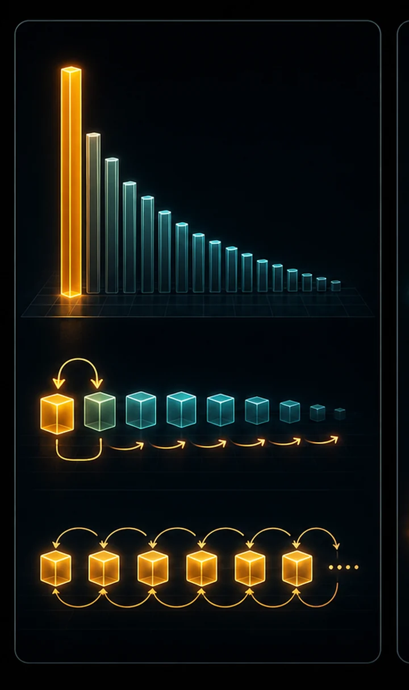
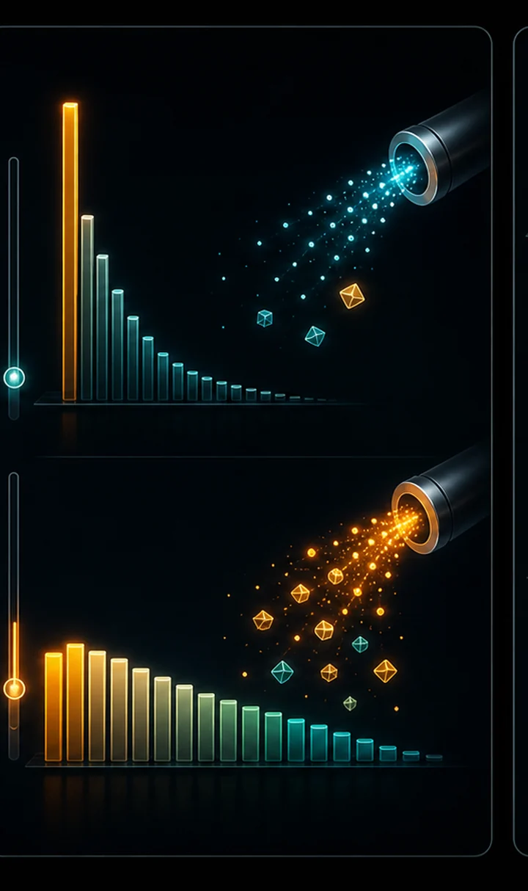
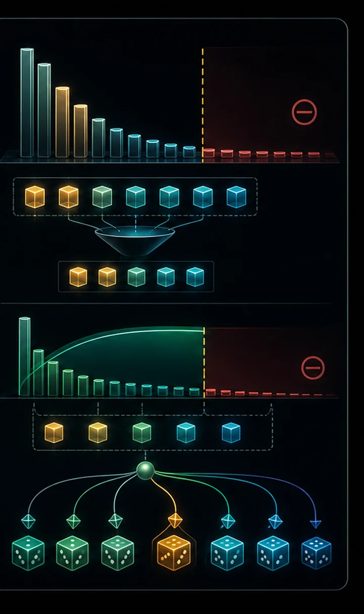

A trained model outputs a probability for every next token; how you pick from them transforms the text without touching a single weight. Greedy loops forever; temperature trades safety for creativity; top-k and top-p hit the sweet spot.
This is exactly the temperature / top_p knob you set when calling an LLM API. The model is frozen — you're reshaping how it samples from itself.
Once trained, the model gives a distribution over the next token; decoding decides how to pick from it. Greedy (argmax) maximizes each local step but produces repetitive, globally sub-optimal text, and beam search — great for translation — degenerates for open-ended generation. So we sample, but shape the distribution first.
Temperature T divides the logits before softmax: T < 1 sharpens toward the top choices (safer, more repetitive), T > 1 flattens them (wilder, more diverse), and T→0 recovers greedy. Truncation then trims the unreliable tail — top-k keeps the k most likely tokens, top-p (nucleus) keeps the smallest set whose probability mass exceeds p, adapting how many options it considers to how confident the model is. None of this touches the weights; it's purely how you read the same model.



GREEDY (gets stuck): the world of the world of the world... TEMPERATURE 1.5 (wild, creative): thyremh, discops: LeWlooke me hand TOP-P 0.9 (coherent and varied): KING HENRY VI: There shall seek so your way
"""
#10 in the "NN to tiny LLM" ladder.
A trained model outputs a probability for every possible next token. HOW we
pick from that distribution dramatically changes the text — without touching
the weights at all. These are the "generation" or "decoding" strategies, and
they're exactly the knobs an API like ChatGPT exposes (temperature, top_p...).
- GREEDY : always take the single most likely token. Safe but
repetitive, often loops.
- TEMPERATURE : divide the logits by T before softmax.
T<1 -> sharper/safer, T>1 -> flatter/wilder, T=1 -> raw.
- TOP-K : keep only the k most likely tokens, sample among them.
- TOP-P (nucleus) : keep the smallest set of tokens whose probabilities sum
to p, sample among them. Adapts how many options it
considers to how confident the model is.
We LOAD the model trained in #9 (tiny_gpt.pt) — no retraining — and compare the
strategies side by side on the same seed.
Run with: python 10_sampling.py (requires tiny_gpt.pt from running #9 first)
"""
import importlib.util
import os
import torch
import torch.nn.functional as F
# 09_tiny_gpt.py starts with a digit, so it can't be imported normally.
# Load it as a module to reuse its TinyGPT class, tokenizer, and config.
spec = importlib.util.spec_from_file_location("tiny_gpt", "09_tiny_gpt.py")
tg = importlib.util.module_from_spec(spec)
spec.loader.exec_module(tg)
DEVICE = tg.DEVICE
BLOCK_SIZE = tg.BLOCK_SIZE
def load_model():
if not os.path.exists(tg.CKPT_PATH):
raise SystemExit("No tiny_gpt.pt found — run `python 09_tiny_gpt.py` first.")
model = tg.TinyGPT().to(DEVICE)
ckpt = torch.load(tg.CKPT_PATH, map_location=DEVICE)
model.load_state_dict(ckpt["model"])
model.eval()
return model
@torch.no_grad()
def sample(model, n_tokens=300, temperature=1.0, top_k=None, top_p=None, seed=0):
"""Generate text using the chosen decoding strategy."""
torch.manual_seed(seed)
idx = torch.zeros((1, 1), dtype=torch.long, device=DEVICE) # newline seed
for _ in range(n_tokens):
logits, _ = model(idx[:, -BLOCK_SIZE:])
logits = logits[:, -1, :] # scores for the next token
# TEMPERATURE: scale logits. Lower = more confident/repetitive.
logits = logits / max(temperature, 1e-6)
# TOP-K: zero out everything except the k highest-scoring tokens.
if top_k is not None:
kth = torch.topk(logits, top_k).values[:, -1, None]
logits = logits.masked_fill(logits < kth, float("-inf"))
probs = F.softmax(logits, dim=-1)
# TOP-P (nucleus): keep the smallest set of tokens covering prob mass p.
if top_p is not None:
sorted_probs, sorted_idx = torch.sort(probs, descending=True)
cumulative = torch.cumsum(sorted_probs, dim=-1)
remove = cumulative - sorted_probs > top_p # keep through the crossover
sorted_probs[remove] = 0
probs = torch.zeros_like(probs).scatter(1, sorted_idx, sorted_probs)
probs = probs / probs.sum(dim=-1, keepdim=True)
next_id = torch.multinomial(probs, num_samples=1)
idx = torch.cat([idx, next_id], dim=1)
return tg.decode(idx[0].tolist())
@torch.no_grad()
def sample_greedy(model, n_tokens=300):
"""Always pick the argmax — deterministic, tends to repeat."""
idx = torch.zeros((1, 1), dtype=torch.long, device=DEVICE)
for _ in range(n_tokens):
logits, _ = model(idx[:, -BLOCK_SIZE:])
next_id = logits[:, -1, :].argmax(dim=-1, keepdim=True)
idx = torch.cat([idx, next_id], dim=1)
return tg.decode(idx[0].tolist())
def show(title, text):
print(f"\n{'=' * 60}\n{title}\n{'=' * 60}")
print(text.strip())
if __name__ == "__main__":
model = load_model()
print(f"loaded {tg.CKPT_PATH} — comparing decoding strategies "
f"(no retraining)\n")
show("GREEDY (always the top token — watch it get stuck/repeat)",
sample_greedy(model, 250))
show("TEMPERATURE 0.5 (timid, safe, more repetitive)",
sample(model, 250, temperature=0.5))
show("TEMPERATURE 1.0 (the raw distribution)",
sample(model, 250, temperature=1.0))
show("TEMPERATURE 1.5 (wild, creative, more typos)",
sample(model, 250, temperature=1.5))
show("TOP-K = 10 (only the 10 likeliest tokens each step)",
sample(model, 250, top_k=10))
show("TOP-P = 0.9 (nucleus: adaptive shortlist)",
sample(model, 250, top_p=0.9))
print("\n\nSame weights, six different writers. This is why one model can "
"be\nmade 'creative' or 'precise' just by changing decoding settings.")